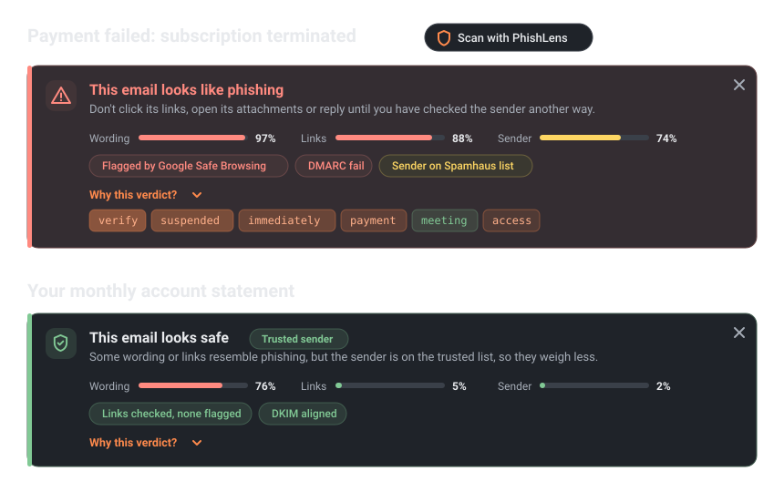
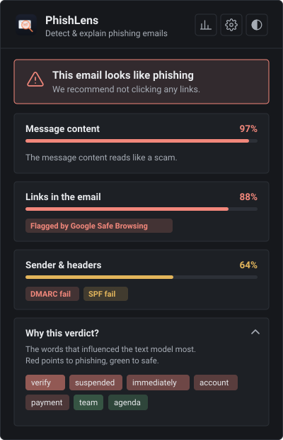
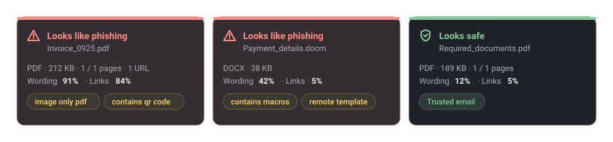

0.967
F1, text model (DistilBERT)
Chrome extension · Gmail + Outlook · open source
PhishLens adds a verdict above every email in Gmail and Outlook: one score per check, the signals it found, and the words that weighed most. Click Scan, or let it check new mail on its own.

Offline test sets and a load test on PhishLens Cloud. Real inboxes are harder: see the known limitations.
Read from the server when the page loads. Counters reset when the server restarts.
Real bank and university emails use the same words as phishing, so a text model on its own flags them. PhishLens checks the evidence before it decides.


This box uses the same server as the extension. Nothing is stored, but please use test emails, not private ones.
The verdict, the score of each check and the words behind it appear here.
The Chrome Web Store listing is in preparation. Until then, load the extension from the repository: about two minutes.
chrome://extensions and turn on Developer mode (top right).extension/ folder.huggingface-cli download AnzouKiona/phishlens-distilbert \ --local-dir backend/model cd backend && docker compose up --build
Python without Docker, configuration and deployment: see the quickstart.